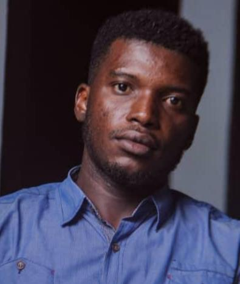

|  |
Oladimeji Adeyemi
No 7 Kao Close Santos Layout, akowonjo roundabout, Dopemu, Lagos.
Phone: +234(0)8031805152
Email: oladimejiadeyemi@gmail.com
|
PROFILE SUMMARY
A Computer Science graduate with a strong academic background and up-to-date knowledge of technologies, God fearing, obedient, hardworking, looking to use and build upon the valuable skills developed.
Education and Qualification
2017-2019 Nigerian Defence Academy Post graduate School, Kaduna
MSc. Computer Science
2015-2016 National Youth Service Corps
2011-2015 Salem University Lokoja
BSc. Computer
Science
2nd Class Upper division
Experience
2015-2016 Computer Tutor (NYSC)
Focus Academy kabala west, Kaduna State
- Tutored the secondary section of the school 18-20 hours per week.
- Designed tests to chart their progress.
- Helped develop their analytical.
- Working closely with other teaching and school staff, participating and organizing seminars, extracurricular activities such as sporting, social events.
Key Skills & Competencies
- Programming (Java, Visual Basic, Matlab, Python, C#)
- Computer Vision, Image Processing, Deep Learning, Machine Learning.
- Excellent understanding of Computer Science fundamentals, data structures, and algorithms.
- Microsoft Office (Excel, Powerpoint, Internet, etc.)
- Use of web-script languages like HTML, CSS, Bootstrap, PHP, JavaScript for website designing and development.
- Tech Savvy, result-oriented, innovative and actively learn new information to keep up to date with current requirements and innovations within the field of expertise.
- Highly developed communication skills both verbal and non-verbal.
- Hardware and Network troubleshooting
- Ability to multi-task, prioritize tasks, work well under pressure, handle confidential information, integrate into all team situations easily and comfortably, willing to work flexible schedules / shifts.
Languages
- English, Yoruba and Hausa.
Hobbies & Interests
- Travelling, Social Media, Research, Reading, Music, Movies, Watching Football and Playing Football, Computer Vision, Programming and Machine Learning.
Publication
- Martins E. Irhebhude, Oladimeji A. Adeyemi, Adeola Kolawole. Speed Breakers, Road Marking Detection and Recognition Using Image Processing Techniques, Advances in Image and Video Processing, Volume 7 No 5, October (2019); pp: 30-42.
REFEREES
Dr ME Irhebhude
| Assistant Dean, Postgraduate School |
| Nigerian Defence Academy |
| Kaduna |
| +2348164403543 |
| mirhebhude@nda.edu.ng |
|
Mr. Emoghene Ogidiaka
| Network Engineer |
| Teledom International Limited |
| Ikeja, Lagos |
| +2348161595800 |
| Ogidiaka.emoghene@yahoo.com |
|